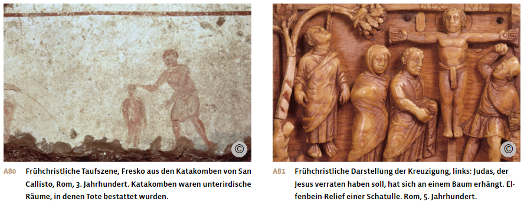
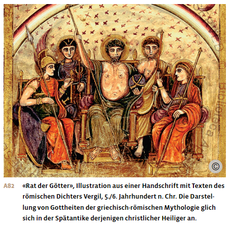
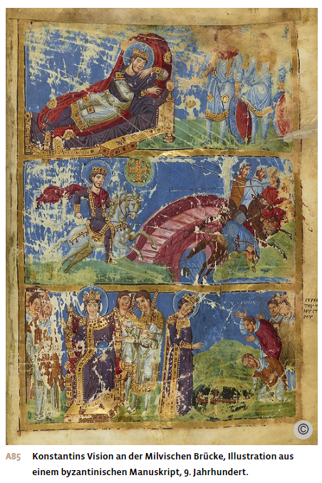
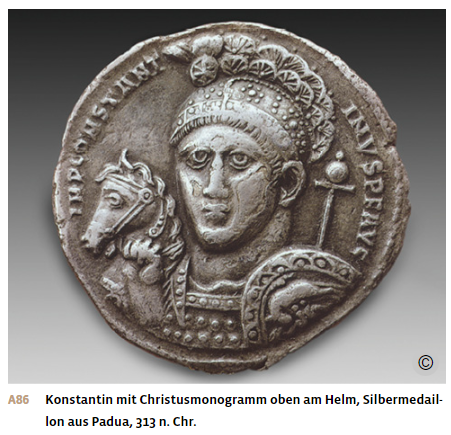
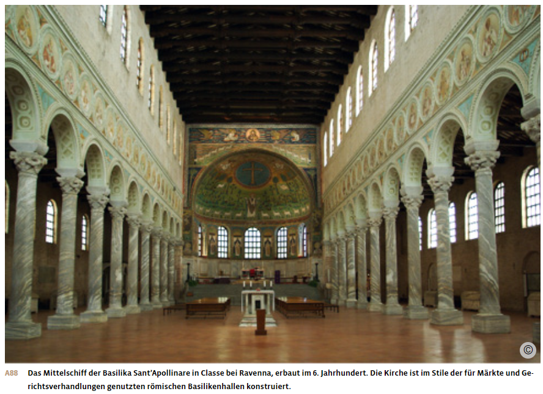

Materialdossier: Christentum – Entstehung und Verbreitung
Vollständiger Inhalt des Unterrichtsdossiers · Römische Antike_Christentum_Entstehung und Verbreitung.docx
Die Spätantike und die Ausbreitung des Christentums
Die Anfänge des Christentums und die Christenverfolgungen
Jesus und Paulus
Im Jahr 30 n. Chr. wurde in Jerusalem ein junger Jude namens Jesus hingerichtet. Er hatte eine eigene Lehre verbreitet, die bei den jüdischen Religionsgelehrten auf Widerstand gestossen war. Er kritisierte zum Beispiel die bloss oberflächliche Einhaltung der religiösen Gesetze. Zudem war er überzeugt, dass mit ihm ein neues Gottesreich anbrechen würde. Das machte ihn wohl auch den römischen Behörden verdächtig, die ihn schliesslich zum Tode verurteilten. Nach seiner Kreuzigung erzählten sich seine Anhängerinnen und Anhänger, Jesus sei von den Toten auferstanden und in den Himmel aufgefahren, um eines Tages als Richter zurückzukehren. Er sei der «Gesalbte» – also der von Gott zur Herrschaft Auserwählte –, auf Hebräisch «Messias», Griechisch «Christos».
In der jüdischen Gemeinschaft war man sich nicht einig, wie man auf die Botschaft von Jesus reagieren sollte: Viele lehnten sie ab, andere schlossen sich der neuen Lehre an. Eine entscheidende Rolle spielte dabei der Apostel Paulus von Tarsus: Der gelehrte Jude stieg innerhalb der christlich-jüdischen Gemeinde auf und setzte etwa ab 50 n. Chr. durch, dass die christliche Botschaft nicht nur unter jüdischen Mitmenschen, sondern auch unter allen anderen verbreitet werden solle. Mit diesem Entscheid für die sogenannte Heidenmission wurden die entscheidenden Weichen für den Aufstieg des Christentums zur Weltreligion gestellt. Das Römische Reich bot ideale Voraussetzungen für eine rasche Ausbreitung der neuen Religion: Hier lebten etwa 60 Millionen Menschen, die in einem gemeinsamen Herrschaftsraum vereint waren, was Kontakte und Reisen sehr erleichterte.

Das Verhältnis zum Judentum und zum römischen Staat
Zwar war das Christentum aus dem Judentum hervorgegangen und zunächst eine Art jüdische Sekte, doch schon bald bildeten sich unüberbrückbare Differenzen. Aus jüdischer Sicht galt die christliche Verehrung von Jesus als Sohn Gottes und der jungfräulichen Gottesmutter Maria als abweichende Lehre. Eine weitere Distanzierung setzte mit dem Beginn der Heidenmission ein, da das Judentum im Gegensatz zum Christentum keine missionierende Religion ist, sondern sich in der Regel über die Abstammung definiert. Als zudem die christliche Lehre die Einhaltung aller jüdischen Gebote infrage stellte und die jüdische Religion als überholt kritisierte, kam es im frühen 2. Jahrhundert zur vollständigen Trennung zwischen Christentum und Judentum.
Die römische Obrigkeit ihrerseits tat sich ebenfalls schwer mit der neuen Religion. Die Weigerung der Christen und Christinnen, Opfer für das Wohl des Reiches und des Kaisers zu bringen, irritierte sie. Zwar fiel es der römischen Religion mit ihrem polytheistischen Glaubenssystem leicht, die Verehrung neuer Gottheiten in ihr System zu integrieren. Der römischen Religion ging es nicht um einen bestimmten Glauben, aber sie bestand auf die Einhaltung der Riten. Widersetzten sich die christlichen Gläubigen gemeinsamen religiösen Handlungen, etwa der Teilnahme an Opfern für die römischen Götter, gefährdeten sie nach römischer Auffassung das Einvernehmen mit den über das Reich wachenden Gottheiten und stellten sich damit ausserhalb der Gemeinschaft und gegen den römischen Kaiser.
Dem römischen Staat erschien zudem bedrohlich, dass das Christentum im Gegensatz zum Judentum missionierte und sich ausbreitete. Die Unterdrückung des Christentums richtete sich also weniger gegen die Glaubensinhalte der neuen Religion als vielmehr gegen die vermeintliche politische Verweigerungshaltung ihrer Anhängerinnen und Anhänger.
Kaiser Trajan stellte daher um 112 n. Chr. die christliche Religion unter Todesstrafe, bestimmte aber, dass nicht gezielt nach Christen und Christinnen gefahndet werden dürfe. So konnten die christlichen Gläubigen in den ersten beiden Jahrhunderten nach dem Tod von Jesus trotzdem meist unbehelligt leben.
Verfolgungen
Von Zeit zu Zeit brachen jedoch brutale Verfolgungswellen über die Anhänger des Christentums herein. Eine erste unter Kaiser Nero diente als Ablenkungsmanöver. Im Juli 64 brach in Rom ein verheerender Brand aus. Da Nero verdächtigt wurde, den Brand selbst gelegt zu haben, machte er die christlichen Gläubigen, die damals in Rom eine unbeliebte Randgruppe bildeten, für den Brand verantwortlich und liess zahlreiche Christinnen und Christen in der Stadt töten.
Viel weitere Kreise zogen die grossen Verfolgungen des 3. und frühen 4. Jahrhunderts. Da das Römische Reich in dieser Phase an mehreren Fronten von aussen bedroht war, wollte Kaiser Decius im Jahr 250 die Götter gnädig stimmen und erliess im ganzen Römischen Reich ein Opferedikt: Alle Reichsbewohner sollten zum Wohle des Reichs Opfer bringen und erhielten nach Erfüllung eine schriftliche Bescheinigung. Wer sich weigerte, wurde verfolgt. Noch brutaler ging Kaiser Diokletian 303 gegen die Christinnen und Christen vor, als er mit seinen Reformen das Reich zu stabilisieren suchte und dabei die wachsende Anhängerschaft des Christentums als Bedrohung empfand. Er verbot die christlichen Gottesdienste, liess Kirchen und christliche Schriften zerstören und ordnete die Todesstrafe gegen alle an, die sich weigerten, den Göttern und Kaisern zu opfern.
Für die christliche Gemeinschaft galten Personen, die trotz Todesdrohung dem christlichen Glauben nicht abschworen und für ihren Glauben starben, als Märtyrerinnen und Märtyrer. In ihrem Tod lagen die Anfänge der Heiligenverehrung, denn in ihrem Leiden offenbarte sich nach christlichem Verständnis das Wirken Gottes.
Zahlreiche Christinnen und Christen beugten sich jedoch angesichts der Todesdrohung den kaiserlichen Anordnungen und opferte den römischen Göttern. Die noch junge Kirche sah sich in einem Dilemma und entschied dann, solche Opfer nicht als Abfall vom Christentum zu werten, sondern als Sünde, die bei Reue vergeben werden konnte. So konnte das Christentum trotz Verboten und Verfolgungen immer mehr Anhängerinnen und Anhänger gewinnen.
Zudem war die neue Religion mit ihrer Vergebungs- und Erlösungslehre für viele Menschen attraktiver als der von starren Ritualen bestimmte römische Kult. Denn die christliche Vorstellung von einer Auferstehung und Erlösung nach dem Tod galt für alle Gläubige gleichermassen, für Arme und Reiche, für Freie und Unfreie, für Männer und Frauen. Gerade deshalb wandten sich auch viele Frauen und Versklavte der christlichen Gemeinschaft zu. Zudem setzten sich Gläubige aufgrund des christlichen Prinzips der Nächstenliebe für die ärmeren Mitglieder ihrer Gemeinschaft ein und übernahmen damit wichtige Aufgaben der Sozialfürsorge.
Auch organisatorisch war das Christentum erfolgreich: In vielen Städten etablierten sich christliche Gemeinden, an deren Spitze meist eine Art Bischof stand, der Episkopos, griechisch für «Aufseher». Im ganzen Reich entstand ein Netz von christlichen Gemeinden. Dieser effizienten kirchlichen Organisation des Christentums hatte die traditionelle römische Religion nichts Vergleichbares entgegenzusetzen.

Konstantinische Wende
Konstantin der Grosse und die Hinwendung zum Christentum
Im Jahr 306 wurde Flavius Valerius Constantinus, genannt Konstantin, von den Soldaten zum Kaiser ausgerufen. Danach setzte er sich in einer Reihe von Bürgerkriegen gegen mehrere Gegner durch. In dieser Zeit wandte sich Konstantin dem Christentum zu. Vor der entscheidenden Schlacht an der Milvischen Brücke in Rom im Jahr 313 soll er eine göttliche Eingebung gehabt haben. Der zeitgenössische Schriftsteller Lactanz berichtet, er sei in einem Traum aufgefordert worden, das Christusmonogramm aus den griechischen Buchstaben X (Chi) und P (Rho) auf die Schilde seiner Soldaten zu schreiben. In einer späteren Schilderung des Kirchenhistorikers Eusebios wird der Traum sogar zu einer Vision, in der Konstantin ein Kreuz am Himmel erschien. Jedenfalls vollzog Konstantin nach der gewonnenen Schlacht eine Wende zu einer christenfreundlichen Politik und förderte die Religion in vielerlei Hinsicht. So liess er konfiszierte Kirchengüter zurückgeben und gewährte den christlichen Geistlichen Steuerbefreiung und Schutz vor Strafverfolgung.

Über die Motive Konstantins, der den Beinamen «der Grosse» erhielt, wird bis heute gerätselt. Denkbar ist, dass er aus religiöser Überzeugung handelte. Es ist aber auch anzunehmen, dass Konstantin in seinem Ringen um die Macht auf Unterstützung der Christinnen und Christen zählen wollte. Die christliche Glaubensgemeinschaft war zwar noch eine Minderheit, aber bereits relativ zahlreich und einflussreich. Denn die Verfolgungen unter Kaiser Diokletian hatten der Attraktivität der neuen Religion trotz grosser Gewalt keinen Abbruch getan.

Die Durchsetzung des Christentums und die Etablierung der Kirche
Konstantins Wende in der Religionspolitik hatte weitreichende Folgen für das Römische Reich und die Funktion des Kaisertums: Auch seine Nachfolger förderten das Christentum und mit dieser kaiserlichen Unterstützung setzte sich die junge Religion in den folgenden Jahrzehnten durch. Sichtbar wurde dies durch den ab dem 4. Jahrhundert geförderten Kirchenbau. Das frühe Christentum hatte eigentliche «Tempel» abgelehnt, weil nach den Worten des Apostels Paulus die Menschen «Gottes Tempel» sein sollten. Nun wurden mit staatlicher und privater Unterstützung Kirchen gebaut. Ihre Grösse und prunkvolle Ausstattung dienten dem Lob Gottes, brachten aber auch Ruhm und Seelenheil für die Stifter. Die ersten Kirchen wurden meist in Form einer Basilika gebaut, der traditionellen römischen Hallenarchitektur.
Im Gegensatz zur traditionellen Religion mit ihrer Vielfalt an Gottheiten duldete das Christentum mit seinem strengen Monotheismus keine anderen Glaubensvorstellungen. Die heidnischen Kulte wurden mehr und mehr zurückgedrängt. So liess Kaiser Theodosius I. um 390 die Olympischen Spiele und das delphische Orakel verbieten. Auch wenn es immer wieder zu Ausschreitungen durch einen christlichen Mob kam, konnten bis ins 6. Jahrhundert nichtchristliche Menschen ihren Glauben weiter praktizieren. Danach wurde mit Ausnahme des Judentums keine andere Religion mehr als das Christentum geduldet.
Das römische Kaisertum verband sich immer stärker mit der christlichen Religion. Der Kaiser, bisher Oberpriester – «pontifex maximus» – des Staatskultes, wurde zum Oberhaupt und Schutzherr des Christentums. Dieses Selbstverständnis des Kaisertums setzte sich auch über die Antike hinaus im Mittelalter fort. Gleichzeitig entstand mit der christlichen Kirche aber auch eine mächtige Organisation, die weitgehend unabhängig vom Kaisertum agierte. Durch Schenkungen und Erbschaften gelangte die Kirche zu grossem Reichtum und politischem Einfluss. Ihre Bischöfe wurden nicht vom Staat gewählt, sondern von eigenen Versammlungen, die sich durch den Willen Gottes legitimierten. Eine weitere Kraft, die sich weder vom Staatsapparat noch von den Kirchenoberen kontrollieren liess, war die damals aufkommende Mönchsbewegung.

Für antike Verhältnisse bemerkenswert sind auch die Möglichkeiten, die die neue Religion den Frauen bot. Reiche Witwen stifteten Kirchen oder Klöster. So finanzierte und leitete die Römerin Paula ab dem Jahr 398 ein Kloster in Bethlehem. Ihre Zeitgenossin Fabiola gründete ein Hospital in Rom. Frauen konnten sich zudem der gesellschaftlich erwarteten Verheiratung entziehen, indem sie ihr Leben ganz Gott und der Religion weihten – eine im Christentum hochgeschätzte Lebensform.
Dennoch hielt die christliche Kirche am traditionellen römischen Patriarchat fest: Die Gesellschaft wurde weiterhin von Männern dominiert, in der Familie bestimmte der «pater familias». Oft wurden Ehen mit grossem Altersunterschied arrangiert, beispielsweise verlobte sich der Kirchenvater Augustinus im Alter von 30 Jahren mit einem zehnjährigen Mädchen.
Konflikte innerhalb des Christentums
Die kirchliche Organisation der einzelnen Gemeinden wuchs mit der Zahl der Christinnen und Christen. An ihrer Spitze standen die Bischöfe. Unter ihnen genossen die Bischöfe von Rom, Jerusalem, Konstantinopel und anderen grossen Städten besonderes Ansehen, wenn es um Glaubensfragen ging. Auch der Kaiser mischte sich in kirchenpolitische Fragen ein, so konnte er Bischöfe absetzen oder versuchte innerkirchliche Streitigkeiten zu schlichten.
Denn obwohl das Christentum eine einheitliche Religion darstellte, gab es keine Einheit in der Auslegung des christlichen Glaubens. Im Gegenteil: Der Einfluss der griechischen Philosophie auf die christlichen Theologen führte zu heftigen Auseinandersetzungen über gewisse religiöse Grundsätze. Vor allem die Frage nach der Natur von Christus erregte die Gemüter, denn sie berührte einen wesentlichen Kern der christlichen Lehre: War Jesus Christus menschlicher oder göttlicher Natur oder beides? Schon Konstantin hatte versucht, auf diese Diskussionen einzuwirken, da er kein Interesse daran hatte, seine Macht auf eine sich zerstrittene Religion zu stützen. Er berief 325 n. Chr. eine Versammlung von Kirchenmännern ein, das Konzil von Nicäa, um eine einheitliche Regelung des Credos, des Glaubensbekenntnisses der Christen, zu erreichen. Dabei wurde die göttliche Dreieinigkeit von Gottvater, Gottessohn und dem Heiligen Geist (Gottes Geist) als verbindlicher Glaubenssatz festgelegt.
Die theologischen Streitfragen konnten dort jedoch nicht abschliessend geklärt werden und flammten schon bald wieder auf. Sie stellten auch die christliche Basis immer wieder vor Glaubensfragen und Gewissenskonflikte. Gegen andersgläubige Christen wurde oft ebenso brutal vorgegangen wie gegen Nicht-Christen. Die theologischen Streitigkeiten überlagerten sich zudem mit Machtfragen: Welcher Bischofssitz war der wichtigste? Rom, Konstantinopel oder Alexandria? So entstanden später aus theologischen Streitfragen und regionalen machtpolitischen Konflikten verschiedene christliche Glaubensrichtungen: die katholische mit Rom als Zentrum, die orthodoxe mit Konstantinopel oder die koptische in Ägypten.
Aus: Notz, Thomas; Frey, Walter (Hg.): Geschichte fürs Gymnasium. Steinzeit bis 1450. Bern 2024, S. 220-227.
Quelle
Kaiser Konstantin (zwischen 270 und 288–337 n. Chr.) am Konzil von Nicäa, 325 n. Chr.
Am Ersten Konzil von Nicäa diskutierten die Bischöfe des Reichs über Kirchenfragen. Kaiser Konstantin I. nahm persönlich daran teil. Eusebios schildert in seiner Lebensbeschreibung des Kaisers dessen Einzug am Konzil.
Als ein Tag für die Synode [20. Mai 325] festgesetzt worden war, an dem die Streitfragen einer Lösung zugeführt werden sollten, war ein jeder zugegen, der dabei mithelfen wollte, im innersten Haus der Palastanlage, das an Grösse alle anderen zu übertreffen schien. Zahlreiche Sitzplätze waren in Reihen auf jeder der beiden Seiten des Hauses angeordnet worden. Die Geladenen traten ein und alle nahmen den ihnen gebührenden Platz ein. Als sich allerdings die ganze Versammlung in der gebührenden Ordnung gesetzt hatte, da herrschte allgemeines Schweigen in Erwartung des Einzugs des Kaisers. Und es kam als erster ein Mann aus dem Gefolge des Kaisers und ein zweiter und ein dritter. Und noch andere bildeten die Spitze, doch gehörten sie nicht wie gewohnt zum Kreis der Hopliten und Doryphoren [Leibwächtern], sondern ausschliesslich zur Schar der treuen Freunde. Alle erhoben sich (von ihren Plätzen) auf ein verabredetes Zeichen hin, das den Einzug des Kaisers anzeigte. Er selbst schritt nun durch ihre Mitte wie ein himmlischer Engel Gottes und liess seinen Mantel wie durch das Schimmern des Lichtes leuchtend erstrahlen und glänzte durch die feurig anzuschauenden Strahlen von Purpur, geschmückt durch den strahlenden Glanz von Gold und kostbaren Edelsteinen. Soviel also zum Äusseren. In der Seele aber war er offensichtlich mit der Furcht Gottes und Ehrfurcht geschmückt. Das brachten seine Augen zum Vorschein, die nach unten blickten, die Röte im Gesicht, seine Haltung beim Gehen, und die übrige Gestalt, seine Grösse, die alle um ihn herum überragte <***> [Lücke im Text] durch die Schönheit der Jugend, die grossartige Stärke seiner körperlichen Vollkommenheit und unbesiegbaren Kraft. Dies, gemischt mit der Eleganz und Sanftheit der kaiserlichen Milde, zeigte das Übernatürliche seines Denkens, das mit Worten nicht beschreibbar ist. Nachdem er bis zum ersten Platz ganz vorne an den Sitzreihen vorbei geschritten war, trat er in die Mitte vor und setzte sich auf einen kleinen, für ihn bereit gestellten Stuhl, der aus Gold gefertigt worden war, aber nicht bevor ihm die Bischöfe zugenickt hatten. Dasselbe taten alle mit dem Kaiser.
Zitiert nach: Eusebius von Caesarea: De Vita Constantini. Über das Leben Konstantins, übersetzt und kommentiert von Horst Schneider, Turnhout 2007, S. 321 und 323.
Aufträge
1. Erstelle einen Zeitstrahl mit den wichtigsten Ereignissen.
2. Erkläre folgende Begriffe: Christus, Christusmonogramm, Heidenmission, Märtyrer, Monotheismus / Polytheismus.
3. Erläutere Faktoren, die den Aufstieg des Christentums begünstigten.
4. Warum kam es zur Trennung von Judentum und Christentum?
5. Erläutere, warum das Christentum von der römischen Obrigkeit als Bedrohung wahrgenommen wurde.
6. Die ‚Konstantinische Wende‘ markiert einen entscheidenden Einschnitt in der Religionspolitik. Erörtere die Motive des Kaisers Konstantin für seine Hinwendung zum Christentum und dessen Förderung.
7. Erläutere, weshalb das Christentum, das ehemals selbst Verfolgungen ausgesetzt war, später selbst zur Verfolgung Andersgläubiger überging.
8. Das Konzil von Nicäa (325 n. Chr.)
8.1. Was wurde auf diesem Konzil beschlossen?
8.2. Zeige am Bericht des Eusebios über den Einzug Konstantins am Konzil von Nicäa neue Elemente der Spätantike auf.